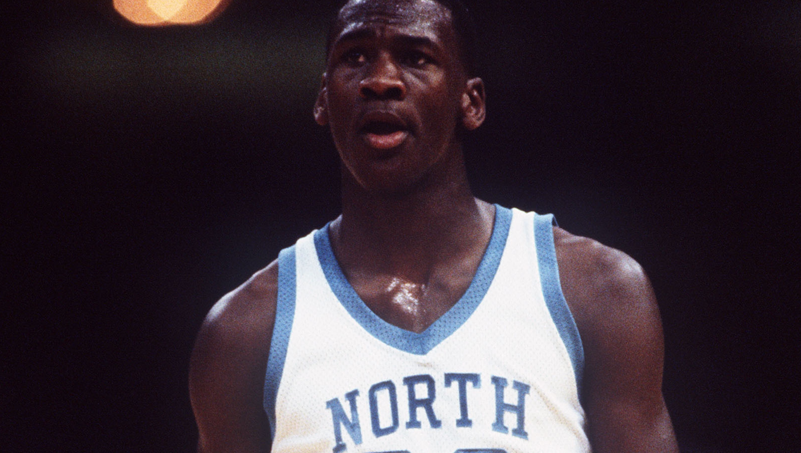
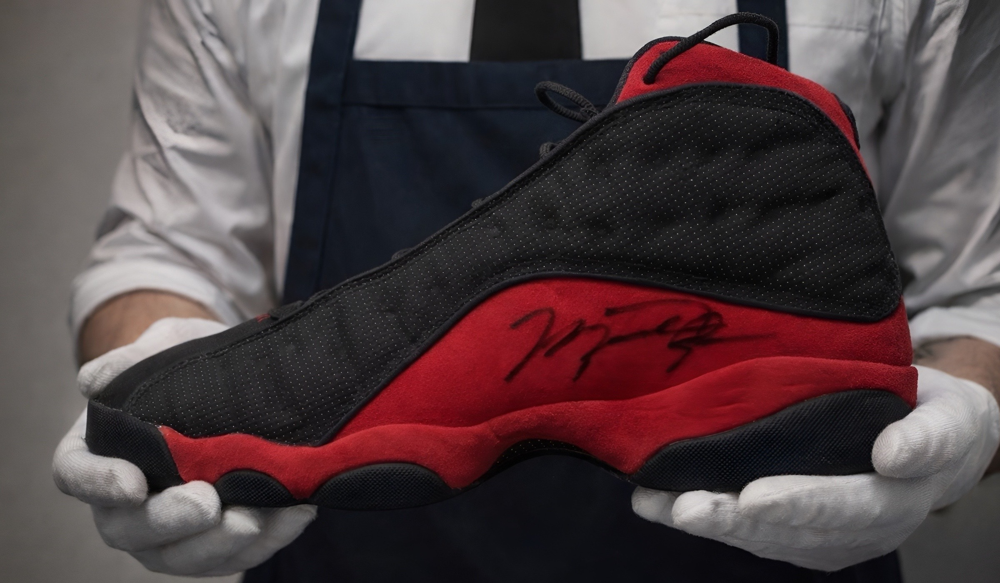
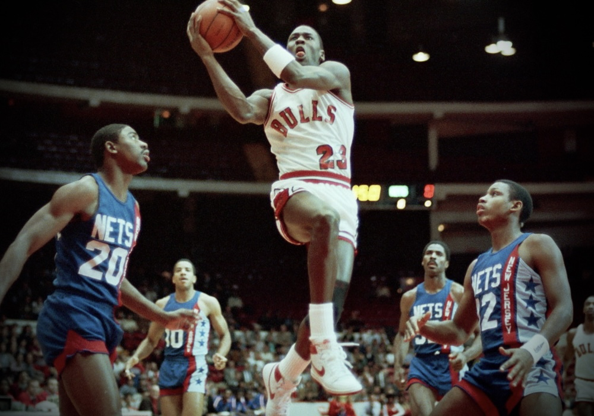
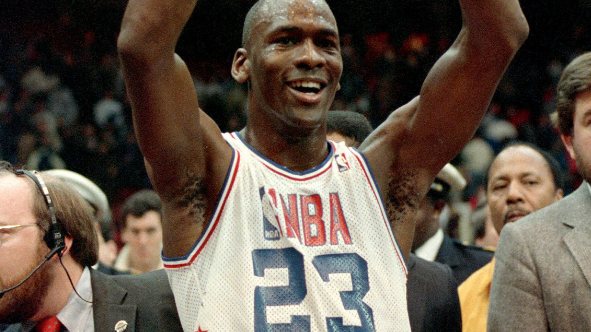

Hiding in Plain Sight
A study of museum-held Michael Jordan game-worn jerseys and the role of photographic identification in revealing their true place within the historical record.
Read article
Observational writing, research entries, and long-form articles drawn from ongoing archival work within the Michael Jordan Archive.
The journal functions as the publication layer of the archive — a place for broader observations, case studies, and longer arguments that sit alongside the underlying season and artifact documentation.

A study of museum-held Michael Jordan game-worn jerseys and the role of photographic identification in revealing their true place within the historical record.
Read articleRepresent ongoing research within the archive, including case findings, observational analysis, and documented study. The section functions as a working journal of research activity, with additional material introduced as investigation progresses and documentation is completed.

FOOTWEAR RESEARCH
A reconstruction of Michael Jordan's Nike Air Ship chronology, tracing surviving examples, preseason configurations, and the transition into the opening weeks of his NBA career.

CONTINUATION RESEARCH
A study of museum-held Michael Jordan game-worn jerseys and the role of photographic identification in revealing their true place within the historical record.